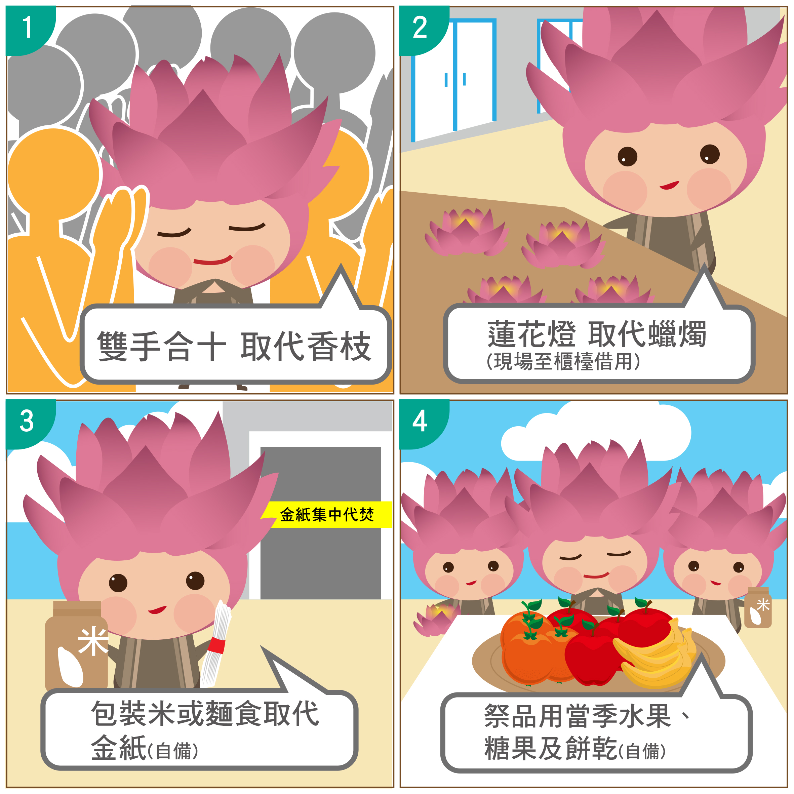

環保祭祀知多少?
生命追思紀念網
環保祭祀供品準備指南
環保葬&一櫃多罐
生前預立環保葬意願書
多元環保鼓勵金
環保祭祀供品參考指南
你知道環保祭祀是甚麼? 準備指南讓你第一次準備就上手
祭 品：真空包肉乾、水果、罐裝飲料、泡麵、乾糧、糖果、餅乾等。蓮花燈：現場免費借用，替代香枝、蠟燭。雙手合十不插香，誠心祭拜。
環保祭祀－環保葬&一櫃多罐
響應多元環保葬，建構優質葬儀文化
隨環保意識抬頭，選擇樹、花、海葬等環保葬法處理身後事的市民，年年提升。為鼓勵市民響應，臺北市環保葬完全免費。
一櫃多罐的家族溫暖同祭
為回應市民欲將不同地除籍親友之骨灰放在一起的期待。市府2016年起推動「一櫃多罐」政策，使市民於祭祀時節團聚一處，溫暖同祭先祖。
為保障本市往生市民權益，陽明山臻愛樓寄存限制為本市往生市民，惟為紓解本市櫃位不足的壓力，也回應民眾想把不同居住地除籍之父母、親友骨灰放在一起的期待。市府2016年4月底開始推行的「一櫃多罐」，鼓勵同一家族(亡者之配偶或三等親屬、不限除籍地)，骨灰罐放在同一櫃內，第二罐以上，每增加一罐以第一罐的4分之1使用費計算。
交通資訊
交通管制
掃墓公車
清明復康巴士
接駁車指引
停車資訊
交通管制
| 地區 | 交通管制點 | 管制車種 |
|---|---|---|
| 木柵 | 崇德街與富陽街口 | 汽、機車 |
| 研究院路四段與木柵路四段159巷口 | 汽、機車 | |
| 西寒寺前三岔路口 | 汽、機車 | |
| 木柵路萬福橋頭 | 汽車 | |
| 南港研究院路三段 | 汽車 | |
| 陽明山 | 行義路與泉源路口 （惇敘工商往陽明山公墓路口） |
汽車 |
實施地區
- 富德公墓（含富德靈骨樓、詠愛園樹葬區）
- 陽明山第一公墓（含陽明山靈骨塔、臻愛樓、臻善園）
- 南港軍人公墓
掃墓公車
假日掃墓公車
行駛日期
109年3月21日、22日、28日、29日，4月2日、3日、4日、5日 (共8日)
營運時間
5:30至17:00（下山末班車為17:30）發車班距約為尖峰3至5分鐘，離峰5至10分 鐘。
行駛路線
木柵線:捷運動物園站─富德靈骨樓
崇德線:捷運麟光站─崇德街─富德公墓辦公室
南港線:南港軍人公墓─富德靈骨樓
陽明山線:惇敘工商─陽明山靈骨塔
軍人公墓線:南港軍人公墓─忠靈堂（8：00至17：00營運）
平日掃墓公車112路(須付費)
行駛日期
109年3月23日~27日、30日、31日，4月1日（共8日）
營運時間
8:00至17:00
班次時間
60分鐘一班車（每60分鐘自動物園2號出口發車，17:00為最後一班車）
收費方式
一段票
搭乘地點
捷運動物園站2號出口旁
行駛路線
捷運動物園站 → 富德靈骨樓 → 富德公墓辦公室 → 捷運動物園站
清明復康巴士
提供身障人士、孕婦及70歲以上高齡長者，隨行家屬限1人陪同，到達目的地後，駕駛提供聯絡卡片方便使用者聯繫。
清明復康巴士時間
6:00~17:00
清明復康巴士站點
捷運動物園站2號出口、捷運麟光站1號出口、南港軍人公墓站、惇敘工商站。
接駁車指引
| 目的地 | 頭末班車 | 掃墓公車路線 | 掃墓公車站點 |
|---|---|---|---|
| 富德墓區 | 木柵線 |
5:30至17:00營運 尖峰約3至5分鐘，離峰5至10分鐘） 下山末班車為17:30 |
捷運動物園站 （2號出口）、萬福橋頭 公車轉乘資訊 捷運動物園站（2號出口）、萬福橋頭市區公車轉乘
|
| 崇德線 |
捷運麟光站1號出口 公車轉乘資訊 捷運麟光站1號出口市區公車轉乘 搭乘和平幹線、15、18、72 、211、282、285、292（含副）、556、680、685、902、市民小巴7至捷運麟光站下車。 |
||
| 南港線 |
南港軍人公墓（南港線） 公車轉乘資訊 南港軍人公墓站市區公車轉乘 205、270、620、645副、小1、小12（含區）、藍25至南港軍人公墓站下車。 |
||
| 陽明山墓區 | 陽明山線 | 5:30至17:00營運 （尖峰約3至5分鐘，離峰5至10分鐘） 下山末班車為17:30 |
惇敘工商（龍鳳谷遊客中心） 公車轉乘資訊 惇敘工商站市區公車轉乘 搭乘128、230、508（含區）、535、536、612 、小8、小7、小25至惇敘工商下車。 |
| 南港軍人墓區 | 軍人公墓線 | 8:00至17:00營運（20-30分鐘） 下山末班車為17:30 |
南港軍人公墓（軍人公墓線） 公車轉乘資訊 南港軍人公墓站市區公車轉乘 搭乘205、270、620、645副、小1、小12（含區）、藍25至南港軍人公墓站下車。 |
停車資訊
前往富德墓區接駁專車（停車場）
| 停車場名稱 | 車位數 | 地圖 |
|---|---|---|
|
木柵動物園停車場（文山區河川高灘地） 臨近木柵動物園捷運站 |
汽車:943位 | |
|
動物園站地下停車場（文山區新光路二段28號） 臨近木柵動物園捷運站 |
汽車:150位 機車:200位 |
|
|
捷運木柵機廠停車場（文山區新光路二段19號） 臨近木柵動物園捷運站 |
汽車：678位 | |
|
萬興國小停車場（文山區秀朗路二段116號） 臨近大誠高中公車站 |
汽：234 機：188 |
前往陽明山墓區一般公車行經（停車場）
前往南港軍人墓區接駁專車（停車場）
| 停車場名稱 | 車位數 | 地圖 |
|---|---|---|
|
舊庄區民活動中心停車場（舊庄街1段91巷11號地下層） 鄰近木柵動物園捷運站 |
汽車:23位 機車:68位置 |
|
| 研究院路平面停車場（研究院路2段84巷） | 汽車:8位 | |
| 福山平面停車場（福山街4號旁） | 汽車:29 | |
|
南港59號公園臨時平面停車場 （研究院路2段12巷57弄2號旁） |
汽車:21位置 |
祭祀流程指引
木柵富德靈骨樓祭祀指引
陽明山臻愛樓祭祀指引
陽明山靈骨塔祭祀指引
木柵富德靈骨樓祭祀指引
祭拜流程說明
全面禁止燒香燃燭!!
1. 將祭品陳設於祭桌上
2. 先拜佛組、再拜土地公、三拜萬應公
3. 回祭桌前向祖先行禮
4. 入塔探視祖先
5. 若有準備紙錢者，請送至代焚處
陽明山臻愛樓祭祀指引
祭拜流程說明
全面禁止燒香燃燭!!
1. 將祭品陳設於祭桌上
2. 蓮花燈借用處
3. 雙手合十祭拜
4. 入塔探視祖先
5. 若有準備紙錢者，請送至代焚處
陽明山靈骨塔祭祀指引
祭拜流程說明
全面禁止燒香燃燭!!
1. 將祭品陳設於祭桌上
2. 先拜佛組、再拜土地公、三拜萬應公
3. 回祭桌前向祖先行禮
4. 入塔探視祖先
5. 若有準備紙錢者，請送至代焚處

因應武漢肺炎，為避免使用酒精引燃火源
全面禁止燒香燃燭
請派代表入內參拜並全程配戴口罩
額溫高於37.5度者請勿入內參拜